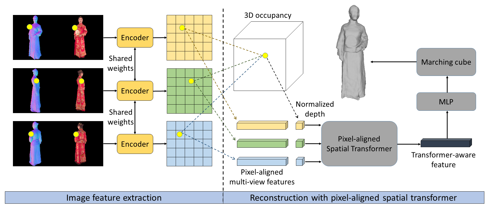
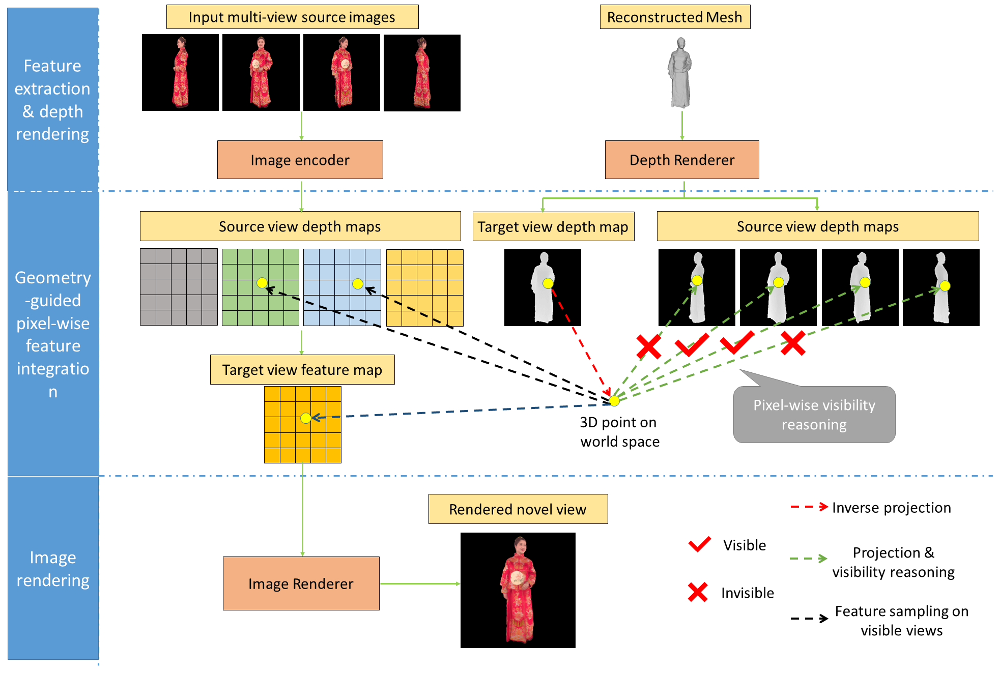

In this paper, we introduce HumanIBR, a method that addresses the challenge of novel view rendering of human performers that wear clothes with complex patterns using a sparse set of camera views. Some recent works have achieved remarkable rendering quality on humans that wear pure clothes using sparse views, but if the clothes have complex color patterns, the rendering quality is still very low. To this end, the proposed HumanIBR uses a human reconstruction net with pixel-aligned spatial transformer and a render net that uses geometry-guided pixel-wise feature integration to achieve to goal of high quality human reconstruction and rendering. The designed pixel-aligned spatial transformer calculates the correlations between the input views, producing human reconstruction results with high-frequency details presented in the input views. Based on the reconstruction, the geometry-guided pixel-wise visibility reasoning provides a guidance for multi-view feature integration, enabling the render net to render high quality images on novel views. Unlike previous neural rendering works that always need to train or fine-tune a separate network for each scene or human, our method is a general framework that is able to generalize to novel humans. Experiments show that our approach outperforms all the prior general or human-specific works on both synthetic data and real-world data.

Fig.1 Architecture of our reconstruction net. We use pixel-aligned spatial transformer for multi-view feature fusion, enabling us to produce pixel-aligned highly detailed reconstruction results.

Fig.2 Architecture of our render net. The geometry-guided pixel-wise feature integration enable us to solve the severe occlusions caused by the sparsity of input views, resulting in high quality rendering.
@misc{zhou2022humanibr,
title={HumanIBR: High Quality Image-based Rendering of Challenging Human Performers using Sparse Views},
author={Tiansong Zhou and Tao Yu and Ruizhi Shao and Kun Li},
year={2022},
eprint={2201.08158},
archivePrefix={arXiv},
primaryClass={cs.CV}
}